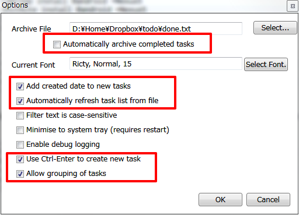
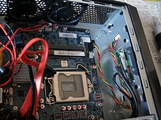
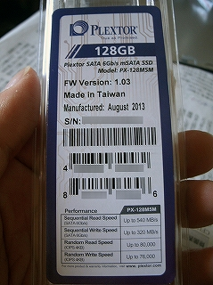
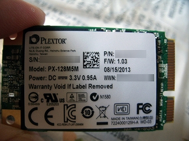
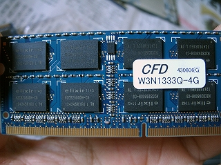
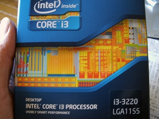
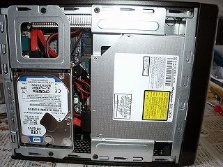
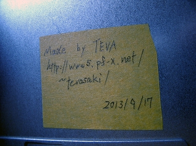
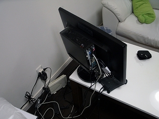

世の中にはやらなきゃいけない事が沢山あり
忘れちゃなんねぇ事も沢山あります。
それらをタスクとか呼んで、優先度を付けて管理すると色々とはかどるってなもんです。
で、それを "todo" と言うらしいですね。
今回はそのtodoをどんなデバイスでも一元管理するやり方でございます。
単純に3種類ありまして、それぞれWindows用、Linuxとか用、スマホとかのandroid用。
まずはリンク先から todotxt.msi をダウンロードしてきます。
執筆段階ではVersion 2.2.3.0が最新ぽ。
名前の通り、.NETランタイムが必要ですが、適当に入れてください。
Optionは以下の通り設定すると幸せになれます。

特に "Use Ctrl-Enter to create new task" の項なんかは日本語IMEを使う上では外せないと思います。
自動アーカイブはあえてやらない。
完了したタスクをまた戻すかもしれないし、過去一覧も見たいし
そして何よりファイルを分けたくない。
操作も実に直感的。殆どマウス使いません。
以下は普段使いに必要なキーバインド。
注意点としてIMEを全角モードで操作すると挙動がおかしくなります。
例えば新規登録のつもりで' N 'を押してから「あそぶ」って打ったつもりが「なそぶ」てなったりｗ
CentOSとかUbuntuとかDebianとか、LinuxBoxにもInstall出来ます。
ってか実体はシェルスクリプトなので、内容を書き換えて実行権限を付けてやれば動きます。
まずはCUIのDropboxをInstallします。
これが無いと話にならないので(・θ・)
デスクトップ環境があるなら、公式からクライアントをダウンロードしてインストールすればよいでしょう。
簡単ぷぅ(・ω・)
#CUI版 Dropboxのインストール
Dropbox のダウンロード & 伸張$ wget -O - http://www.dropbox.com/download?plat=lnx.x86_64 | tar xzf -Dropbox 起動。そして表示されるurlにアクセスして認証を通し、Ctrl + C で終了。
$ ~/.dropbox-dist/dropboxd This client is not linked to any account... Please visit https://www.dropbox.com/cli_link?host_id=xxxxyyyyzzzz to link this machine. Client successfully linked, Welcome tevasaki! ^Cdropbox.py に実行権限を付けてパスの通ったディレクトリに移動する。
$ chmod 700 dropbox.py $ sudo mv dropbox.py /usr/local/bin/dropbox [sudo]password for user:場所の確認。 /usr/local/bin にdropboxという名前で実行ファイルが出来ている。
$ ls -l /usr/local/bin/ -rwx------ 1 teva teva 111373 Oct 10 05:40 dropboxスクリプトを起動するも、daemonが無いと怒られるので -i オプションを付けてダウンロード/インストールする。
$ dropbox start -i Starting Dropbox... Dropbox is the easiest way to share and store your files online. Want to learn more? Head to https://www.dropbox.com/ In order to use Dropbox, you must download the proprietary daemon. Note: python-gpgme is not installed, we will not be able to verify binary signatures. [y/n] y Downloading Dropbox... 100% Unpacking Dropbox... 100% Done!status で同期されているか確認。
$ dropbox status Idleホーム(/home/user/)にDropbox/ が出来ているので内容を確認。
$ dropbox exclude add ~/Dropbox/Photos/ Excluded: photos $ dropbox exclude add ~/Dropbox/public/ Excluded: public $ dropbox exclude add ~/Dropbox/share/ Excluded: share $ dropbox exclude add ~/Dropbox/tool/ Excluded: tool同期除外されているかを確認。
$ dropbox exclude list Excluded: photos public share tool完了(・θ・)b
次に肝心のtodo.sh のインストール。
公式ページから現時点で最新版の"todo.txt_cli-2.9.tar.gz" をダウンロードして、/home/user/src/todo.txt_cli-2.9 に展開したとします。
# todo.cfg に以下を追記。Dropboxのtodoフォルダですね。
export TODO_DIR=${HOME}"/Dropbox/todo"
# bashrc にエイリアスを追加。" t " だけで実行出来る様にする。
# -a で自動アーカイブをしない。
# -t でタスクに自動で日付を追加する。
alias t='todo.sh -a -t'
# PATHを通す為、bashrc 末尾に以下を追記。
PATH="$PATH:~/src/todo.txt_cli-2.9"
# shに実行権限を付与。
$ chmod +x todo.sh
以下、書式。
エイリアスにした' t ' の後に続けて打ち込むだけでOK.
| コマンド | 実行内容 |
|---|---|
| add 予定 | "予定" を追加 @xxx でxxx というコンテキスト名を付ける。 +yyy でyyy というプロジェクト名を付ける。 $ t add 予定 @xxx +yyy 65 2013-11-03 予定 @xxx +yyy TODO: 65 added. ↑この65 というのが通し番号なので、これに対して優先度を付けたり削除したりdoしたり。 |
| app 65 AAA | 通し番号65 のタスクに"AAA" を追加する。 |
| replace 65 更新 | 通し番号65 のタスクを"更新" に置き換える。 |
| ls | 予定を全て表示。検索もコレで。 |
| pri 65 A | 通し番号65 のタスクの優先度をA にする。 |
| lsp | 優先度の付いたタスクのみ一覧表示。 |
| do 65 | 通し番号65 のタスクを実行済みにする。 |
| rm 65 | 通し番号65 のタスクを削除。元に戻せないので要注意。 |
$ lv ~/Dropbox/todo/done.txt 07 x 2013-10-30 2013-10-30 SyntaxHighlighter install @maintain +HP 10 x 2013-10-30 2013-10-30 SyntaxHighlighter install @maintain +HP 08 x 2013-10-30 2013-10-31 MinGW install @win +Client 09 x 2013-10-30 2013-10-31 MinGW install @win +Client 11 x 2013-11-11 2013-11-10 Intel Corei3 i3-3220 @ヨドバシカメラ +買い物リスト 18 x 2013-11-11 2013-11-10 Intel Corei3 i3-3220 @ヨドバシカメラ +買い物リスト 16 x 2013-11-12 2013-11-10 SODIMM DDR3 PC3-10600 @ドスパラ +買い物リスト 13 x 2013-11-12 2013-11-10 SODIMM DDR3 PC3-10600 @ドスパラ +買い物リスト 15 x 2013-11-12 2013-11-10 たまねぎ @山田商店 +買い物リスト 17 x 2013-11-12 2013-11-10 たまねぎ @山田商店 +買い物リスト 23 x 2013-11-12 2013-11-10 にんじん @山田商店 +買い物リスト 14 x 2013-11-12 2013-11-10 にんじん @山田商店 +買い物リスト 25 x 2013-11-03 2013-11-03 CUI ver , dropbox install for todo.txt @linux +Server 22 x 2013-11-03 2013-11-03 CUI ver , dropbox install for todo.txt @linux +Server 28 x 2013-11-05 2013-11-05 Maple馴れ合い場のUTF-8化とupload @maintain +HP 31 x 2013-11-05 2013-11-05 Maple馴れ合い場のUTF-8化とupload @maintain +HP -- TODO: 64 of 64 tasks showntodo.sh のオプション、deduplicate を使うと一気に解決うはおｋ
$ todo.sh deduplicate TODO: 19 duplicate task(s) removed 07 x 2013-10-30 2013-10-30 SyntaxHighlighter install @maintain +HP 08 x 2013-10-30 2013-10-31 MinGW install @win +Client 11 x 2013-11-11 2013-11-10 Intel Corei3 i3-3220 @ヨドバシカメラ +買い物リスト 16 x 2013-11-12 2013-11-10 SODIMM DDR3 PC3-10600 @ドスパラ +買い物リスト 15 x 2013-11-12 2013-11-10 たまねぎ @山田商店 +買い物リスト 23 x 2013-11-12 2013-11-10 にんじん @山田商店 +買い物リスト 25 x 2013-11-03 2013-11-03 CUI ver , dropbox install for todo.txt @linux +Server 28 x 2013-11-05 2013-11-05 Maple馴れ合い場のUTF-8化とupload @maintain +HP -- TODO: 45 of 45 tasks shown
それと、todo.sh の内容を眺めていて気が付いたんですが、
todo.txt.BAK という名前で一世代前のバックアップファイルが作成されるみたいです。
素敵ですね。
$ t helpとか打ち込んでヘルプを読んでみましょう。
$ t shorthelpの方が見通しがいいです。よく見比べてみましょう。
最後にAndroid版のご紹介。
2ドル、、、¥200ぐらいの有料アプリですが、いつでも持ち歩くスマホとかタブレットとかに入れておくと
上記"買い物リスト" とか、知人から「○月Ｘ日にあそこに集合なー」とかすぐに登録出来ます
少しわかりにくいのがフィルタ表示のやり方。
左側をスワイプすればメニューが出てきますので、登録したコンテキスト or プロジェクトで抽出出来ます。
コンテキストというのが"背景"、"状況"という意味、プロジェクトが計画、企画という意味ですので
実際の業務で使うとしたらこんな感じかな？↓
$ t add HKJ134モジュール @単体テスト +ABC社仮想化システムリプレイス対応 $ t add HK1300フロー @結合テスト +ABC社仮想化システムリプレイス対応 $ t add 14：00 先方にて打ち合わせ @meeting +ABC企業仮想化システムリプレイス対応 $ t add 11:00 グループ会議 @meeting +新人教育
更にWindowsの.NET版と、Android版のアプリは最初から優先度を付けて登録出来ますので、優先度を付け直す手間がかかりません。
登録の段階で "(A) 家賃振込！" みたいな感じで。
以上、随分と長い記事になってしまいましたが如何でしょうか？
WiMaxとかWi2とかXiとかモバイル通信が容易に確保出来るこの時代、クラウドなんて大層な言葉使わなくても
「いつでも、どこでも」同じモノを取り扱える、とても素敵な時代になっているんじゃないでしょーか。
少し古い言葉を使うなら「ユビキタス」ですかね：P
え？俺はガラケーユーザーの癖になんでこんな記事を書いたのかって？
Nexus5が到着するまでの準備っすよ。じゅ・ん・び(´д`)
ゲッコーで注文してしまった大馬鹿者ですので発売から早一ヶ月。
まだ来ませんorz
オワリ
職場の先輩が新しいPCがほすぃと仰いまして。
俺がPCにも詳しいという事をどこからか聞いたらしく、新規作成依頼を出されました。
俺もそういうの嫌いじゃないですからね、「はいはー作りますぉー」みたいな。
で、今回は簡単ながらその作業ログです。
要望としては以下の通り。
と、まあこんな感じ。(割と無茶言うね)
うーむ、こりゃ普通のケースでは実現出来ないなって事で
再び登場、Shuttle社のベアボーンキット、XH61V！
これは、ウチでサーバーとして使っているXG41の後継機種。
第3世代LGA1155(TDP65w)まで対応で、USB3.0もサポートしておりますので
今回の要件にはピッタリかな、と。
XG41は3年間安定してフル稼働している実績もあるし、
兄貴分モデルなんだからこれぐらい出来るでしょ！という事で作業開始。

XG41と違ってACアダプタ基盤が無くなっており、スッキリしています。
miniPCIスロットも2つ装備しており、mSATA接続のSSDも使えるって事で
Plextor社の128GBモデル、PX-128M5Mをシステムドライブとして使用します。

っつーかこんなちっこいチップに128GBもデータが入るんか、、、

メモリモジュールはノートPCとかで使われている204pin SO-DIMMって型式でした。
こいつも1枚で8GBよりも、4GB*2のデュアルチャンネルで使った方が速度が良く出るDDR3ですので
安定のW3N1333Q-4G*2をチョイス。

ネットの評判では「刺しにくい」「どうやって刺せばいいんだこんなのｗ」って意見もチラホラですが
俺にとっては問題じゃなかったです(・θ・)
横着しないでちゃんとCPUクーラーを外してからやりゃぁいいんですよ(・θ・)
OSは Windows8 64bit無印版をインストールしました。
これならばSSDとも相性ばっちり！
8.1も出ましたしね。
SSDの性質として、全ての領域を使い切らないで物理的に少し余らせておくとパフォーマンスが維持出来るとの事ですので
128GB中 9%程引いた 115GB分をCドライブにしてOSをインストールします。
Dドライブには、DATA保存用に2.5インチのHDD、1.0TBを丸々割り当てる事とします。
あー、CPUはCore i3-3220を選択しました。

消費電力と仮想4coreが最高すぎいぃ
画像はピンボケしすぎいぃ
で、全部詰め込んでこんな感じに！

見ての通りギュウギュウ詰めですので、SATAケーブルは柔らかいのをお勧めします。
5mmの余裕が、、、5mmの余裕がっ！！と叫びながら作業しましたです(・ω・)
そしてこっそりと、こんなサインを作って貼り付けておきましたｗ
どこに隠したかわかるかなー？なんて。

内訳は以下の通り。
| メーカー | 型番 | 金額 | 備考 |
|---|---|---|---|
| Intel | Corei3 i3-3220 | ¥12,700- | 【CPU】3.3GHz , Core2 , Sled4 , HDG2500 , TDP 55W ! |
| CFD | W3N1333Q-4G*2 | ¥9,680- | 【Mem】安心の襟草。 |
| Plextor | PX-128M5M | ¥12,480- | 【SSD】OS install用。128GB , mSATA , 6GB/s (XH61Vでは3GB/sに制限される) |
| WesternDigital | WD10JPVX | ¥8,780- | 【HDD】DATA用。1.0TB , SATA 6.0GB/s , 5400rpm , 8MB cache ! |
| Pioneer | BDR-UD02 | ¥15,300- | 【BDD】4層(128GB)書込みのBDXL対応！ |
| BenQ | GL2460HM | ¥16,980- | 【Monitor】でかい24インチ、綺麗、HDMI！ |
| Logicool | MK270 | ¥2,480- | 【InputDevice】キーボードとマウスのお安いセット。それでもUnifyingで複数デバイスを楽々無線ペアリング！ |
| Shuttle | XH61V | ¥17,638- | 【Case】ベアボーーン |
| Microsoft | Windows8 64bit | ¥10,680- | 【OS】無印のDSP版。明らかにビジネス用途では使えないよね（ |
| 合計 | ¥106,718- | ちょっと超えちゃった：P |
各種ベンチマークスコアが無い？
あー、わざわざ負荷をかけて寿命縮める事もあるまいて。
ググれば山のように出てくらー(´σД｀)
オフィスにはLibreOffice 4.1.1.2 をインストール。
これがあればWordだろうがExcelだろうがPowerPointだろうがDatabaseだろうが、何でも出来るっ
torrentクライアントには定番のBitComet 1.36 64bit を使用。
DLコンテンツやキャッシュの保存場所をDドライブのHDDに指定して、SSDの寿命を延ばします。
ブルーレイディスクの読み書きにはImgBurn 2.5.8.0 を使用。
最早説明不要のお便利ライティングソフト。
それからデスクトップにTeamViewer_Clientへのショートカットを作り、
名前を「何かあったらTEVAがリモートで駆け付けるボタン」って名前にしておきましたｗ
これは、通信経路が非常にセキュアなのがミソ。
そんなこんなで各種セットアップも済ませて嫁に出す準備が出来た頃、先輩の家へ設置しにゆきました。
って、エェｪ(´Д`)ｪェエ

、、、まさかこんな不安定な場所に設置する事になるとは、、、。
ぶっ倒れて壊れても無保証ですぜパイセン！( ´;° ;ё;° ;)